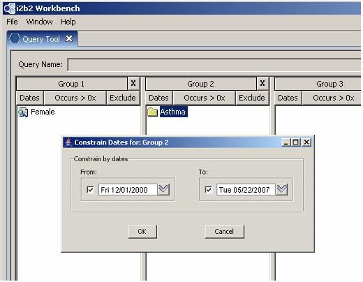
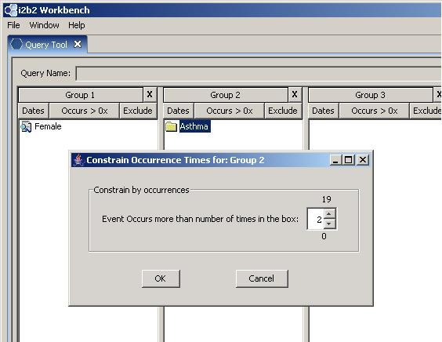

You can constrain the dates on an item by clicking in the From: and To: check boxes and specifying the dates, either by selecting the month/day/year and typing over them or by clicking the triangle and then clicking on dates in the drop-down calendar. You can choose to not constrain by dates From: or To: by un-checking the check boxes in front of the dates.
You can constrain an item by occurrence (only show events occurring more times than the number entered) by clicking the arrows or entering the number directly.
